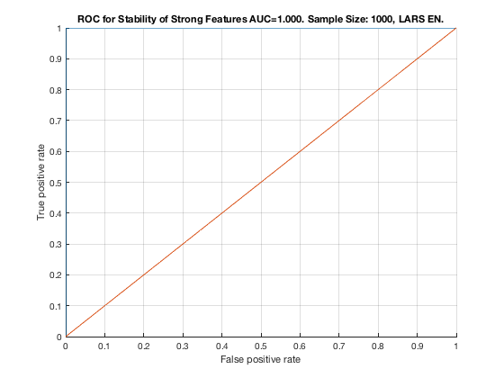

Feature Stability of Elastic Net on TIE-Net with 1000 samples.
unit_stability_type(1000, 3, "TieNet")
Figure 32. ROC for Stability of Strong Features AUC=1.000. Sample Size: 1000, LARS EN. _______________________________________________________________________________________
Table 32. Feature Stability of LARS EN on TieNet with 1000 samples.
____________________________________________________________________
SELECTED COUNTS: Strong=23, Weak=26, Irrelevant=4
TOTAL COUNTS: Strong=23, Weak=26, Irrelevant=4
Feature_Number Stability Type Path_Length N_MBS Equivalence
______________ _________ ____________ ___________ _____ ___________
21 ' 0.976 ' ' STRONG ' 1 0 21
18 ' 0.810 ' ' STRONG ' 1 0 18
22 ' 0.748 ' ' STRONG ' 2 0 21
23 ' 0.708 ' ' STRONG ' 3 0 21
1 ' 0.690 ' ' STRONG ' 1 0 1
19 ' 0.676 ' ' STRONG ' 2 0 18
7 ' 0.674 ' ' STRONG ' 1 0 7
12 ' 0.670 ' ' STRONG ' 1 6 12
2 ' 0.652 ' ' STRONG ' 2 12 1
20 ' 0.648 ' ' STRONG ' 3 18 18
13 ' 0.638 ' ' STRONG ' 2 36 12
8 ' 0.634 ' ' STRONG ' 2 72 7
9 ' 0.618 ' ' STRONG ' 3 108 7
4 ' 0.612 ' ' STRONG ' 4 162 1
3 ' 0.604 ' ' STRONG ' 4 216 1
14 ' 0.602 ' ' STRONG ' 3 324 12
10 ' 0.598 ' ' STRONG ' 4 432 7
5 ' 0.596 ' ' STRONG ' 3 540 1
6 ' 0.592 ' ' STRONG ' 3 648 1
15 ' 0.588 ' ' STRONG ' 3 864 12
11 ' 0.584 ' ' STRONG ' 4 1080 7
16 ' 0.582 ' ' STRONG ' 2 1350 12
17 ' 0.580 ' ' STRONG ' 4 1620 12
40 ' 0.394 ' ' weak ' 3 1620 40
39 ' 0.362 ' ' weak ' 4 1620 39
28 ' 0.310 ' ' weak ' 5 1620 28
38 ' 0.224 ' ' weak ' 5 1620 38
36 ' 0.190 ' ' weak ' 8 1620 36
30 ' 0.174 ' ' weak ' 10 1620 30
41 ' 0.174 ' ' weak ' 3 1620 41
29 ' 0.168 ' ' weak ' 11 1620 29
34 ' 0.162 ' ' weak ' 8 1620 34
33 ' 0.160 ' ' weak ' 8 1620 33
27 ' 0.158 ' ' weak ' 6 1620 27
49 ' 0.154 ' ' weak ' 6 1620 49
24 ' 0.150 ' ' weak ' 4 1620 24
43 ' 0.150 ' 'irrelevant' Inf 1620 43
42 ' 0.138 ' 'irrelevant' Inf 1620 42
37 ' 0.134 ' ' weak ' 6 1620 37
47 ' 0.132 ' 'irrelevant' Inf 1620 47
50 ' 0.120 ' ' weak ' 5 1620 50
46 ' 0.116 ' ' weak ' 7 1620 46
26 ' 0.114 ' ' weak ' 5 1620 26
32 ' 0.112 ' ' weak ' 8 1620 32
44 ' 0.112 ' 'irrelevant' Inf 1620 44
53 ' 0.112 ' ' weak ' 5 1620 53
48 ' 0.110 ' ' weak ' 6 1620 48
31 ' 0.108 ' ' weak ' 9 1620 31
52 ' 0.106 ' ' weak ' 4 1620 52
45 ' 0.104 ' ' weak ' 7 1620 45
51 ' 0.098 ' ' weak ' 4 1620 51
35 ' 0.092 ' ' weak ' 7 1620 35
25 ' 0.078 ' ' weak ' 6 1620 25